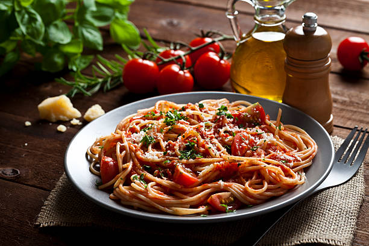

Descubra a Itália
Explore as informações e beleza das cidades mais emblemáticas da Itália.
Informações sobre a Itália
Capital: Roma
População: Aproximadamente 60 milhões
Idioma: Italiano
Moeda: Euro (€)
História e Curiosidades
A Itália possui uma das histórias mais ricas e influentes do mundo. Foi o berço do Império Romano, um dos maiores impérios da Antiguidade, que influenciou a cultura, a arquitetura, a política e o direito de várias civilizações ocidentais.
Durante a Idade Média e o Renascimento, a Itália floresceu em cidades como Florença, Veneza e Roma, tornando-se um centro artístico e intelectual. Grandes nomes como Leonardo da Vinci, Michelangelo e Galileo Galilei nasceram na Itália.
Atualmente, a Itália é um país moderno que preserva seu vasto patrimônio cultural e histórico, atraindo milhões de turistas todos os anos. Além disso, é conhecida pela moda, design, gastronomia e paisagens deslumbrantes, desde os Alpes até as praias do Mediterrâneo.
Curiosidade: O país tem 55 patrimônios mundiais reconhecidos pela UNESCO, sendo um dos líderes mundiais nesse quesito.
Cidades Principais
Comidas Típicas
-

Pizza: A famosa pizza italiana, com diversas variações regionais, é um ícone da culinária do país.
-

Pasta: A massa é um prato fundamental, variando entre diferentes tipos e molhos.
-

Gelato: Sorvete italiano, famoso por sua textura cremosa e variedade de sabores.